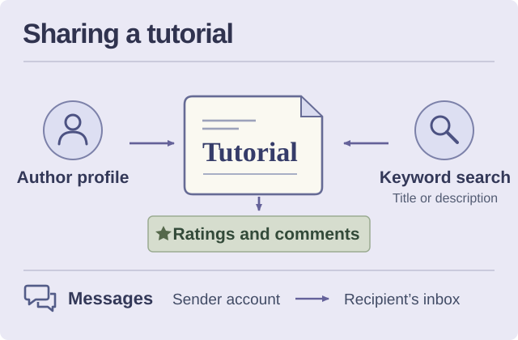
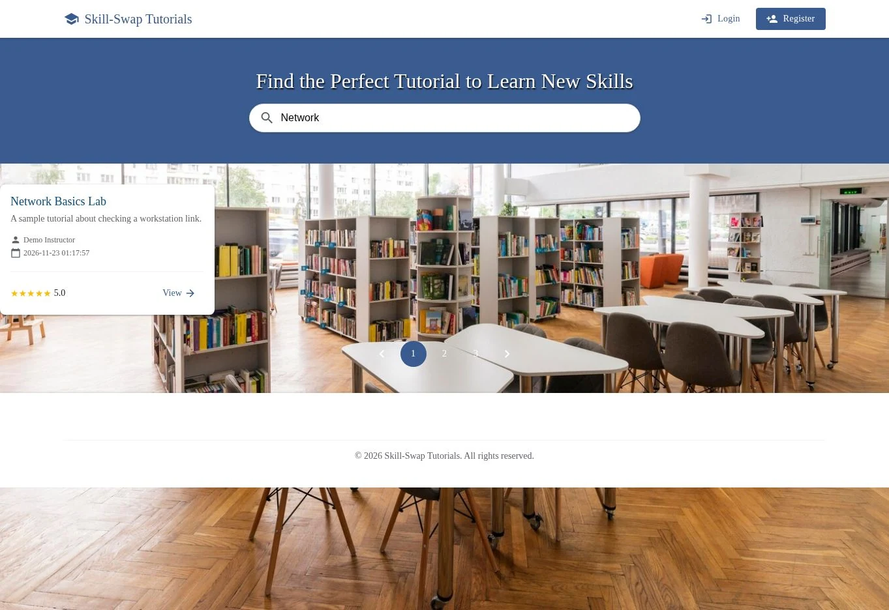
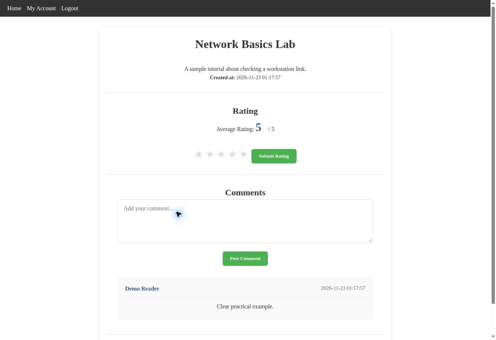

Team web project · 2025
SkillSwap
I came up with SkillSwap in 2025 as a place for students to teach one another through tutorials. I planned and designed the platform, led the team, and used AI-assisted coding during development.
- Year
- 2025
- My role
- Project lead, designer, and developer
- Built with
- PHP, PDO, and MySQL


Enlarge imageA tutorial as the starting point
I wanted a learner to be able to find something useful, see who wrote it, and ask a follow-up question. I organised the site around tutorials so those actions could happen in one place.
From my idea to a team project
I planned the features, designed the workflows, and led development. I used AI coding tools iteratively as I built the PHP pages, refining each feature against the experience I wanted for authors and learners.
From publishing to a conversation
Step 1 of 4
Publish under an author profile
I linked each tutorial to its author. Signed-in members can give a tutorial a title and description and publish it to the tutorial list.
- Author profileIdentifies the member.
- TutorialHolds the title and description.
- Tutorial listMakes the published tutorial discoverable.
Step 2 of 4
Find a tutorial by keyword
I made the search available on the homepage. It matches part of a tutorial’s title or description and lists the newest matches first.


Enlarge imageStep 3 of 4
Add feedback to the tutorial
Signed-in members can open a tutorial and leave a rating and comment. I kept both on the tutorial page so a learner can read other members’ experiences.


Enlarge imageStep 4 of 4
Continue in a direct conversation
I added direct messaging so members can follow up beyond the tutorial page. The inbox lists received messages, and the conversation view puts the exchange in chronological order.
- SenderChooses another member and writes a message.
- MessageRecords the sender and recipient.
- ConversationDisplays the exchange between those members.
How a tutorial keeps its context
In my database design, each tutorial points to one author. Every rating or comment identifies both the tutorial and the member who left it. Messages have a sender and a recipient, so a conversation can continue independently of a particular tutorial.
Two ways into the same tutorial
An author starts in a profile and publishes a tutorial. A learner can start with a public search, then sign in to open the tutorial, rate it, or contact another member. The screenshots use sample accounts from a later demonstration session.
What I built and what I planned
I also explored skill matching and session booking in my project plan. The working application covers tutorial publishing, keyword search, feedback, and direct messaging.
My SkillSwap repository is a fork of the shared team repository.
Contact
Connect with me on LinkedIn or find more of my work on GitHub.